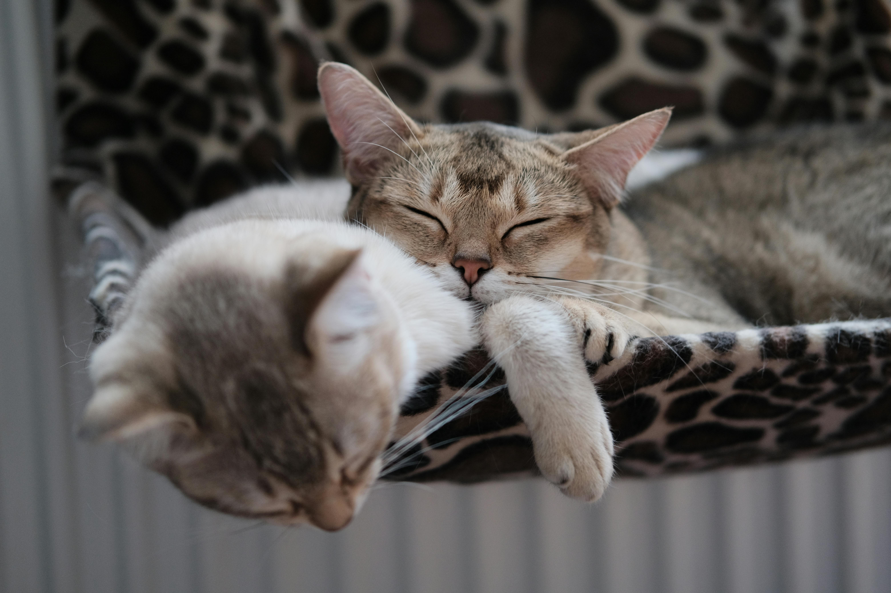

Quem somos?
Somos uma organizaçao sem fins lucrativos que atua com gatos abandonados ou em situaçao de rua.
Missão da ONG Gatinhos salvos
Promover dignidade e oportunidade de acolhimento aos animais abandonados.
Contato
Endereço: Rua Estrela Cadente, 404 - Bairro Esperança Viva - Curitiba/PR
Telefone: 41 96281-0181
Email: ajuda@gatinhossalvos.org.pt.br